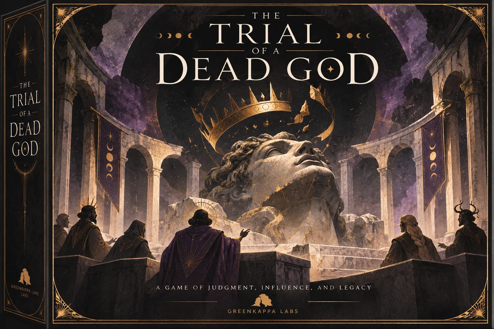

Enter the tribunal
Take your place among parties with conflicting motives and competing interpretations of a divine death.
Field note 03 / Cosmic tribunal
The god is dead. The truth is negotiable.
The god is dead and cannot testify. Everyone else has a version of events and something to gain from the verdict.

01 / The idea
The Trial of a Dead God turns a cosmic tribunal into a social strategy game. Examine evidence, challenge testimony, build alliances, and advance arguments that may be principled, self-serving, or both. When the tribunal finally rules, the decision changes what the dead god will mean to everyone left behind.
02 / The player experience
Take your place among parties with conflicting motives and competing interpretations of a divine death.
Work with evidence and testimony. Support a claim, challenge a witness, or use the uncertainty to your advantage.
Make your arguments, read your opponents, and help determine the verdict and its consequences.
The audience rewards a convincing case; the truth may be less convenient. Players can make alliances when those goals diverge.
03 / Artwork
The fallen deity and its celestial court appear in the original cover concept. The second view enlarges the same artwork.
The enlarged detail on the right is a close-up of the approved cover illustration. Artwork and packaging remain concept designs while the games are in development.
04 / Playtest questions
Creative development is active. These notes describe areas for testing and iteration, not claims that the game is balanced, manufactured, or ready for release.
All five GreenKappa Labs card games are original projects in development. No release date, pricing, or availability has been announced.